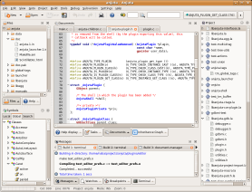
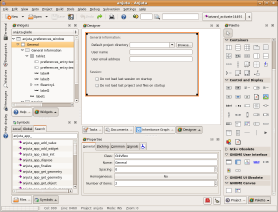

The scoop on Anjuta DevStudio
Anjuta DevStudio has been designed to be simple to operate yet powerful enough to fulfill all your programming needs. We've added many new features to Anjuta over the course of its development. Our focus is on delivering power and usability at the same time and making your software development enjoyable without overloading your senses. We intend to continue improving and stabilizing Anjuta to give you the best IDE experience possible. We hope you will have a good time using Anjuta. If not, please help us make it better by reporting bugs and suggestions.
The following screenshot illustrates some of the things you will find in Anjuta.
User Interface
 Anjuta has a flexible and advanced docking system that allows you to lay out all views in whatever way you like. You can drag and drop the views using drag bars and rearrange the layout. The layouts are persistent for each project so you can maintain different layouts for different projects. All dock views are minimizable to avoid clutter in the main window. Minimized views appear as icons on the left side of the main window. You can configure all menu actions either by typing when the cursor is over a menu item (the usual GNOME way) or through a dedicated shortcut configuration user interface.
{kind=link}
Plugins
Anjuta is very extensible with plugins. Almost all features in Anjuta are implemented using plugins which can be dynamicaly enabled or disabled. You can choose which plugins should be active for your projects and for the default mode (no-project mode). Like the user interface layout, the set of active plugins is also persistent for each project making it easy to work on projects with various levels of complexity.
Using plugins, you can extend Anjuta with your own features. As Anjuta is written in C, the plugin framework and the API are also in C. However, C++ and Python bindings are under active development. In the near future, it should be possible to write Anjuta plugins in C++ and Python.
All plugins in Anjuta are easily replaceable with different plugins implementing similar features. This allows you, for example, to choose from multiple editors (so far, we have the Scintilla and GtkSourceView editors) or to implement a new one suiting your taste (vim/Emacs, anyone?). This applies to any plugin. If Anjuta finds that there are multiple plugins satisfying the same feature requirement, it will prompt the user to select one and will remember the selection.
File Manager
The integrated file manager plugin behaves more or less like your typical file manager in a tree view. It lists all directories and files in the current project (or a pre-configured directory if there is no project open). You can choose not to list hidden files and/or files that are ignored by the version control system. You can also set a custom regular expression in the file manager preferences to select additional files to hide.
The default action (double-clicking) on any file will open it, either within Anjuta if there is a plugin capable of handling it or with an external application configured in your standard desktop. A file can also be opened with other applications/plugins from the context menu which lists all plugins and applications that are able to open it.
In addition, the file manager context menu also lists actions associated with other plugins, such as build actions (associated with the build system plugin), CVS/Subversion actions (associated with version control system plugins) and project actions (associated with the project manager plugin). This allows you to conveniently perform all actions from within the file manager.
Project Manager
Anjuta has a powerful project manager plugin which can open pretty much any automake/autoconf based project on the planet. It might fail on some oddly configured projects, but as long as the project uses automake/autoconf in a typical way, it should work.
The neat thing is that Anjuta does not store any project information beyond what is already available in the project structure. That is, there is no separate project data maintained by Anjuta and all project processing is done directly within the project structure. This allows a project to be maintained or developed outside Anjuta without any need to convert to or from an Anjuta-specific format. Since technically Anjuta projects are just automake projects, mixed development (with both Anjuta and non-Anjuta users) or switching back and forth between Anjuta and other tools is quite possible without any hindrance.
The project manager window displays the project's automake hierarchy organized into groups of targets. Groups correspond to directories in your project and targets correspond to normal automake targets (not to be confused with make targets). The project manager window actually has two parts: the lower part shows the complete project hierarchy and the upper part lists important targets directly. Important targets include executable and library targets; the view makes these easily accessible. This is particularly useful in large projects where the hierarchy can be deep and hard to navigate from the tree alone. Targets are, in turn, composed of source files.
Each project group and target is configurable in the standard automake way. You can set compiler and linker flags directly for each target, or set configure variables. Groups allow you to set an installation destination for their targets.
Just like the file manager, the project manager view also has convenience actions (accessible from the context menu) for source files and targets.
Project wizards
The project wizard plugin uses a powerful template processing engine called autogen. All new projects are created from templates that are written in autogen syntax. The project wizard lets you create new projects from a selection of project templates. The selection includes simple generic, flat (no subdirectory), GTK+, GNOME, Java, Python projects and more. New templates can be easily downloaded and installed since each template is just a collection of text files.
Source Code Editor
There are two editors currently available in Anjuta; the Scintilla-based (classic) editor and the new GtkSourceView-based editor. Except for some minor differences, both are equally functional and can be used interchangeably. Depending on your taste in editing, you can choose either one. Editor features include:
- Syntax highlighting: The editor supports syntax highlighting for almost all common programing languages. Syntax highlighting for new languages can be easily added by adding a properties file, a lexer parser (for the Scintilla editor) or lang files (for the GtkSourceView editor).
- Smart Indentation: Code is automatically indented as you type based on the language and your indentation settings. (Smart indentation is currently only available for C and C++; for other languages, Anjuta performs only basic indentation.)
- Autoindentation: The editor can indent the current line or a selection of lines according to your indentation settings.
- Automatic code formatting (only C and C++): The editor can reformat source code using the
indentprogram. The full range ofindentoptions is available. - Code folding/hiding: You can fold code blocks and functions to hide them hierarchically, and can unfold them to unhide them.
- Line numbers/markers display: The editor has left margins which display line numbers, markers and fold points.
- Text zooming: You can zoom (change the editor font size) using either the scroll wheel or menu commands.
- Code autocompletion: The editor can autocomplete known symbols, and provides type-ahead suggestions to choose for completion.
- Calltips for function prototypes: When you are typing a function call, the editor provides a helpful tip showing the parameters from the function's prototype.
- Indentation guides: The editor has guides to make it easier to see indentation levels.
- Bookmarks: You can set or unset bookmarks for convieniently navigating to frequent destinations in your source code.
- Multiple split views: The editor provides multiple views for the same file (split inside the same editor). This allows you to enter text in a file while referring to the same file at another location, or to copy/paste within the same file at different locations without having to scroll back and forth.
- Incremental Search: The editor can search instantly as you type a search string in the search box. This is useful when you want to avoid typing a full search string when the first few characters are enough to reach the desired location.
- Powerful search and replace: The editor supports searching for strings and regular expressions, searching in files or searching all files in your project.
- Jump to line number: You can instantly jump to any line number in a source file.
- Build message highlighting: Error/warning/information messages are indicated in the editor with helpful (and appropriately colored) underlines. This lets you navigate through a source file correcting all build errors without having to use the build output to jump to errors individually.
- Tabs reordering: You can reorder editor tabs as you like.
- Change notifications: Anjuta notifies you when a file is modified outside Anjuta while it is open in Anjuta.
Symbols view and navigation
The symbol browser plugin shows all symbols in your project organized by type. There are three views in the symbol browser: one showing the global symbol tree, another showing symbols in the current file and a third view for searching symbols. You can navigate to any symbol's definition or declaration.
When Anjuta is started for the first time, it also indexes symbols from all installed libraries for autocompletion and calltips. This provides an instant reference to library functions used in the project. The libraries that should be referenced can be selected from the symbol browser preferences.
Integrated Debugger
Anjuta provides a full source-level debugger (currently backed by gdb, but there will be other debugger backends soon). The debugger provides everything that can be expected from a typical source debugger including breakpoints, watches, source navigation, stack traces, threads, a disassembly view, registers, local variables, and memory dumps. You can also set up breakpoints and watches without first having the debugger running. They are saved in your session so that the next debugging session will still have them.
You can control program execution under the debugger in various ways: you can single step, step over, step out, continue execution, run to the cursor, pause the program, or attach to a running process. All programs in a project can be started in a terminal window and can be provided arguments. When a program links shared libraries within a project, the debugger starts the program correctly using libtool to ensure that non-installed libraries are picked up rather than installed ones.
Integrated Glade user interface designer
 Glade is the GTK+/GNOME WYSIWYG graphical user interface designer which lets you create user interfaces (dialogs and windows) for your application visualy. Glade files can be directly edited within Anjuta. When a Glade file is opened or created, the Glade plugin is started and brings up the designer view, palettes, properties editor and widgets view. The project can have any number of Glade files and, conveniently, more than one can be opened simultaneously (however, only one can be edited at a time).
{kind=link}
Class generator and file wizard
With the class generator plugin, you can create C++ and GObject classes easily and add them to your projects. Similarly, the file wizard can create templates for new source files.
Valgrind plugin and gprof profiler plugins
The integrated valgrind plugin can be used to profile programs for memory leaks and corruptions.
Integrated Devhelp API help browser
 Devhelp is the GTK+/GNOME developer's help browser. It is conveniently integrated into Anjuta to give instant API help. Press Shift+F1 to jump to the API documentation of the symbol at the editor cursor. Make sure you have enabled the Devhelp plugin for the project. In Devhelp, you can browse all installed help documents from the tree view and can search for symbols in the search view.
Devhelp is the GTK+/GNOME developer's help browser. It is conveniently integrated into Anjuta to give instant API help. Press Shift+F1 to jump to the API documentation of the symbol at the editor cursor. Make sure you have enabled the Devhelp plugin for the project. In Devhelp, you can browse all installed help documents from the tree view and can search for symbols in the search view.